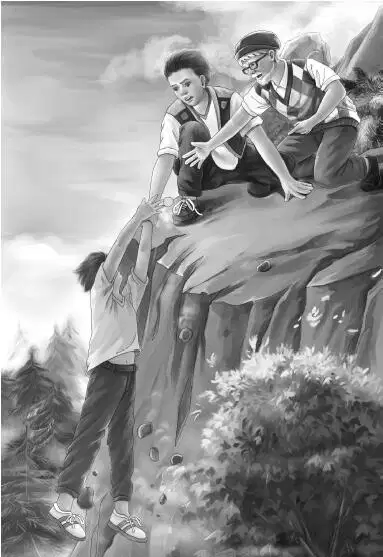

Chapter 2 Hold On，Benny！
“我的天，还好咱们带了毛衣。”亨利说道，“峰顶的风还真猛呢！”说着，他把褐色的毛衣从头上套了下去。
其余几个孩子也纷纷穿上了毛衣，坐成一排。
“真是壮观啊！”杰西不由惊叹道。大家坐在山顶上鸟瞰山谷，有种一览众山小的感觉。
“班尼，坐到我身边来，我有话对你说。”爷爷说道，“别人跟你讲话的时候，小孩子要立刻记在心里，省得别人一遍遍地重复。现在我来告诉你，不要到悬崖边上去。这话我只说一遍，听清了吗？”
爷爷几乎从没用这么严厉的语气说过话。
“听清了！”班尼叫道，“您没说完我就明白了。我本来也不喜欢悬崖。”
亨利环视了一下平坦的峰顶，发现中间隆起一个小丘，“快看！石头上有黑白灰相间的波纹呢！地理学家准会感兴趣的。”
大家也纷纷扭过头，观赏了一番，“看起来像是海浪。”
“的确很像。”爷爷说道，“不过这些是岩石纹，也许在几百万年以前，咱们脚下还是一片汪洋。”
“可能当时这座矮山也高不出海底多少，是后来才被推到这么高的。”亨利说。
听到这儿，班尼突然仰头大笑起来：“我敢打赌，在恐龙生活的那个年代，这里还只是小水坑！”
“也许是一片沼泽呢？”杰西说。
“要是把相机带来就好了。”亨利说道。
“可不是么。”维莉赞同道。
奥登先生望了望下面一望无际的森林，“这些树木好像从来没被砍伐过，要是在树林里迷了路，那可就麻烦了！”
班尼看了看手表：“真希望你们谁能说一句——吃饭的时间到了！”
“就让我来说好了。”维莉拍了拍班尼的肩膀。
“咱们还是先坐下，商量一下怎么个吃法才是。”杰西说道。
“看吧，杰西，你天生就是持家的好手。”亨利说，“要是打算吃热汉堡，就要先生火。咱们去找些木柴吧。”
奥登爷爷一动不动地坐在那儿，望着孩子们。
“这里不是什么木柴都有了么？”班尼说道，“大的小的，看哪，还有一个铁罐和一口平底锅呢！”
“铁罐多半是用来烧水的吧？”维莉回应道，“只管放些咖啡进去，这样爷爷就有咖啡喝了。”
“还是现煮咖啡呢！”爷爷说道。
“杂货店的人想得可真周到。”班尼赞不绝口，“火塘也搭在了背风的地方。”班尼边说边走到了小丘后面。
“看来什么都不缺了。”亨利说道。
每个孩子都分到了任务。
两个男孩负责生火——这种事情，就连班尼都能做好。女孩们则用汉堡做起了蛋糕，她们把里面的培根挑了出来。
“咱们最好先煎培根。”杰西提议。
没过多久，女孩们就把滋滋作响的培根一片一片地摆在了餐巾纸上。
“剩下的油怎么办呢，爷爷？”
“给我吧！”奥登先生说，“让我来，你们只管看着，先不要动。”
爷爷的脸上没有一丝笑容。他趴在地上，缓缓地朝着悬崖边上爬去，“现在把锅给我。”
孩子们全都忍不住想笑，因为爷爷的样子太滑稽了。不过爷爷的表情却十分严肃，他接过平底锅，把滚热的油朝山下倒去，然后缓缓地退了回来，直到远远地离开悬崖才开口道：“看，现在知道为什么上山下山只能走那条小路了吧？”
“知道了，爷爷！可是您刚才的样子好有趣啊！”班尼说，“我都忍不住要笑出来了。”
“哈，我也是！”奥登先生说，“好啦，现在你们想笑就笑吧。”
一想到爷爷把热油倒下悬崖的样子，孩子们就乐不可支。
“把汉堡递给我好吗？”亨利说道，“这个盘子刚好能放六块。”
杰西递过“汉堡蛋糕”，顿时，一阵诱人的香味飘了过来。
接着，亨利又指挥道：“每人都拿盘子装块小面包，再放一片奶酪和餐巾纸，准备迎接汉堡啦！”
“每人还可以分到一瓶可乐。”班尼补充道。
“没错。”亨利说，“除了爷爷——爷爷的是一杯黑咖啡。”
接下来的时间，一家人久久而细致地品尝着空前美味的午餐。
吃完饭，杰西惊讶地感叹：“头一次咱们的野餐还有剩下的。我的汉堡没吃完，维莉的也是。我们总共剩了五个小面包和一个汉堡。”
“等等，我的这个也吃不完。”爷爷赶紧说。
“留着，都留着！”班尼亮起了大嗓门，“没吃完的都打包起来，待会儿我说不定还会吃呢！”
奥登一家捡起用过的纸巾和纸杯，扔进火里，爷爷赶忙说：“把我的咖啡也留着，也许下山前我还要喝上几口。咱们四点准时返程。”
维莉拿起一个可乐瓶，将可乐倒干净后，把咖啡灌了进去。
亨利见状忙说：“把咖啡渣倒在石头上就行，山风会把它们吹走的。”
“下山的时候能不能换我来领头？”班尼央求道。
“好吧。”爷爷这次同意了，“就让你来带队好了。”
大家把打包好的食物放进纸袋。
四点一到，班尼就急不可耐地准备下山了。
“第一级台阶可真难落脚。”班尼感叹道。
“第二级也一样。”亨利说。
班尼蹲下身子，一只脚缓缓地伸了下去，两手紧紧地攀着石阶边缘。这级石阶太高了。班尼真有些后悔没让爷爷或是亨利先下去。
“把手递给我，”亨利说道，“别着急，慢慢来，你能行的。”
班尼紧紧攥着亨利的手，将另外一只脚也踏了下去。好在第二级台阶没那么危险了。
班尼的一只脚踩上了第二级台阶，刚想撒手，脚下突然一空，随着一阵雷鸣般的巨响，台阶从山上滚落下去，松散的石块纷纷被撞落，塌了一片。
“救命啊！”班尼嘶声叫着，一手死死地抓着亨利，一手摸索着可以承重的东西，两腿悬在空中，拼命踢蹬。
爷爷迅速扑倒在地，抓住了班尼的另外一只手。亨利承担了班尼的大部分重量，杰西则揪住了班尼的毛衣，三人一起用力，把班尼拽了上去，拖到了安全地带。
班尼侧身躺在地上，一动不动，拼命地喘着气：“老爷子啊，我可要三天才缓得过劲儿来呢！”
班尼之前从没管爷爷叫过“老爷子”，也从没有人见他这样安静过。奥登先生俯下身子，安慰道：“班尼，别再想石阶的事情了。你该想想这件事有多么不可思议！你之所以没死，是因为还有特殊的使命等着你去完成呢。”

班尼闻言立刻坐了起来。“我真的没死！”他叫道，“大难不死，必有后福，说不准我以后会成为专业登山家或是科学家呢！”
杰西和维莉则吓得脸色发白，她们清楚地看到刚刚班尼是如何死里逃生的——岩石崩落，班尼呼救，大家救援……这一切都发生得太快、太突然。
亨利转身看了看巨石林立的峰顶。他并不想让两个妹妹害怕，但他心里明白，下山的唯一路径已被截断了。平古峰另一侧怪石嶙峋，根本没有落脚的地方。
“咱们现在该商量一下，接下来怎么办。”奥登先生说道，“这里很安全，不过也会很冷，眼下肯定是没法下山了。”
亨利问道：“护林员和店主一定会注意到咱们没下山吧？”
爷爷看了亨利一眼，回答道：“他们会不会注意，咱们也不好说。但有一件事可以肯定——今晚只能在这儿过夜了。现在是初夏，天很快就会黑下来。”
“或许他们听到了石头滚下去的声音呢？”亨利仍心存侥幸。
“对啊，”维莉赞同道，“那动静像打雷一样呢！”
“也许吧。”爷爷说，“不过用不着担心，咱们生起篝火，天黑的时候他们就能看见了。”
亨利隐隐地觉得爷爷似乎隐瞒了些什么。他来不及细想，连忙动手生火。在大家的齐心协力下，熊熊火焰燃烧了起来。
“这……这火……真、真舒服。”维莉说着，牙齿不停地打起战来，“刚才还没觉得这……这么冷呢。”
“那是因为你差点就见不着我了。”班尼解释道，“没听说过吓得发抖这句话吗？”
没过多久，天色便黑了下来。爷爷看上去还是那么镇定。就在这时，大家听到了一阵怪异的隆隆声。
“好像是飞机。”班尼猜测道，“是直升机，我敢打赌！”
“是爷爷安排的！”亨利叫了起来，“爷爷肯定早有准备。”
奥登先生的脸上露出了微笑。
果然是一架直升机。
只见它高高地飞过了峰顶，闪了一下信号灯后，便在奥登一家上空盘旋起来。飞行员通过扩音器喊道：“你们都没事吧？”
“没事！”五个人齐声喊道。
“天太黑，我没法带你们走，只有等明早来救你们！”飞行员喊道，“我扔五个睡袋下去！注意别让火灭了，明早我们就过来。现在，大家都站到小丘后面去。”
全家人依言行事。五个睡袋被依次抛了下来，然后直升机隆隆地飞走了。
“可能他们不知道，咱们的食物也不多了。”杰西说，“还好我们打包了吃剩的午餐，看来晚饭只能吃这个了。”
“也许该留到明早吃。”维莉建议，“说不定咱们要在这里等好久呢！”
“好主意。”爷爷赞同道，“只要身上暖和，饿一点儿也忍得住。”
“我觉得已经被吓饱了——至少现在还没饿。”班尼补充道。
“这就是老话说的‘因祸得福’嘛。”爷爷打趣道。
“应该是‘因石得福’才对。”班尼纠正道。
“咱们还是钻进睡袋里暖和一下吧。”爷爷说道。
就这样，一家人钻进睡袋，坐成了一排。
“要是有人看到了，一定会觉得咱们的样子很可笑。”班尼说。
一家人俯瞰着夜空下的村庄，只见村子的左边灯光点点，右边却是一片漆黑。
少顷，杰西开口问道：“林子里有亮光，会不会是哪位游客困在那儿了？”
“我怎么没看到？”奥登先生抬头看了看，“哦，看到了，有点模糊，不过光源一直没动过。”
“林子里肯定不会有人住，”班尼不解地问，“那到底是哪来的光线呢？”
“等咱们下了山就去弄个明白。”爷爷暗自松了口气——今夜一定会十分漫长，有个大家感兴趣的话题总归不错。“也许护林员知道是怎么回事，要是他们不知道，咱们就自己去查个明白。”
天空中已是群星闪烁。
“今晚不用去床上睡了，”班尼很开心，“我现在已经躺在‘床’上了。”
杰西悄悄对亨利说：“他看起来好像没事了。”
“还不是多亏了爷爷。”亨利低声应道，“都是他开导得好。”
爷爷和亨利决定，今晚由两人轮流添加柴火，好在木柴还多。一家人排成一排，躺在了地上。班尼和维莉分别睡在爷爷两侧。
“爷爷，我想往您那边睡点，可以吗？”班尼的声音里透着困倦。
“过来吧，孩子。”爷爷答应了。
“爷爷，”班尼又说，“我今天好像眼睛都花了呢——大石头滚下去的时候，我好像看到后面有个大洞。”
“没准你真没看错呢！”爷爷说道，“我听说山上都会有洞的。”
渐渐地，班尼进入了梦乡。